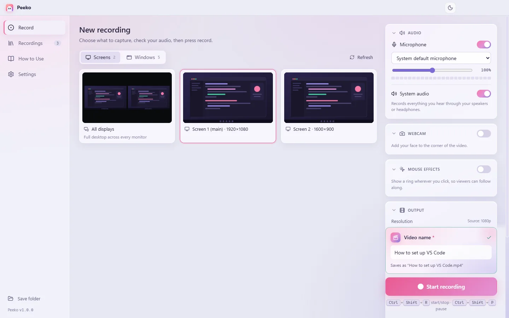
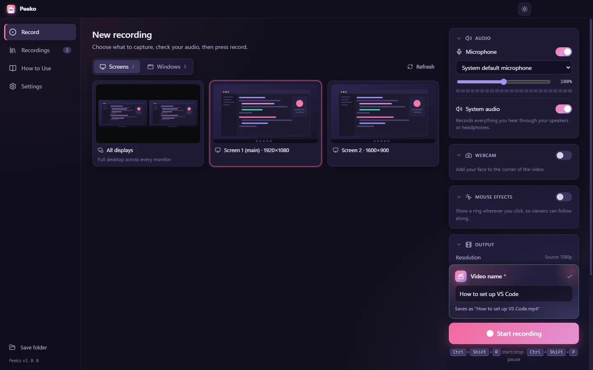
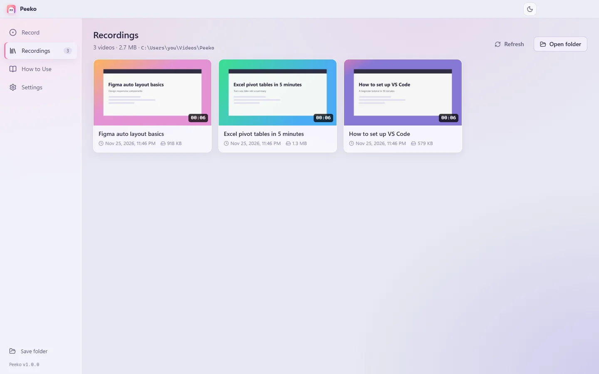
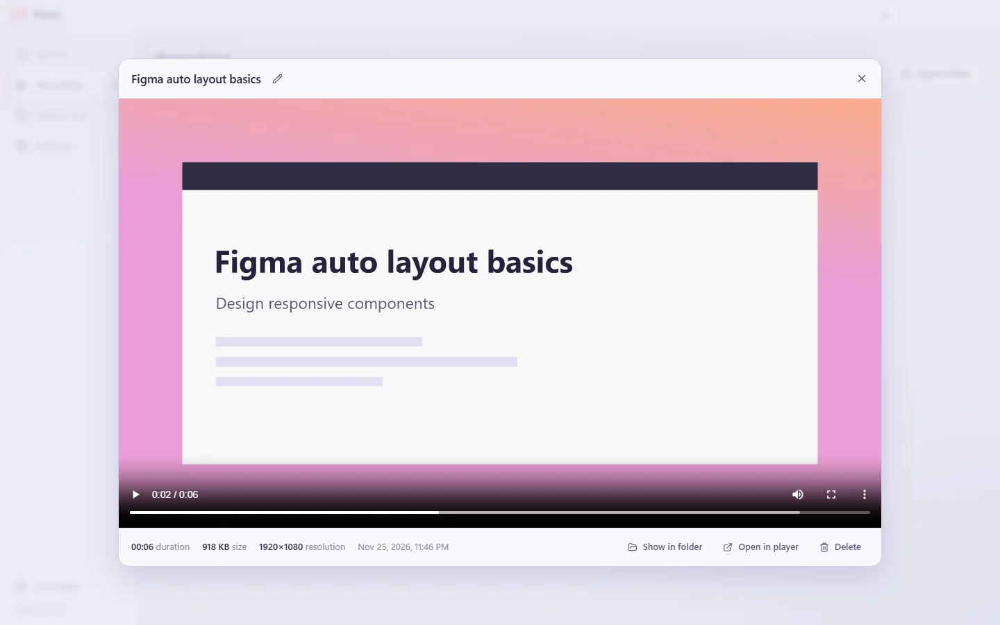
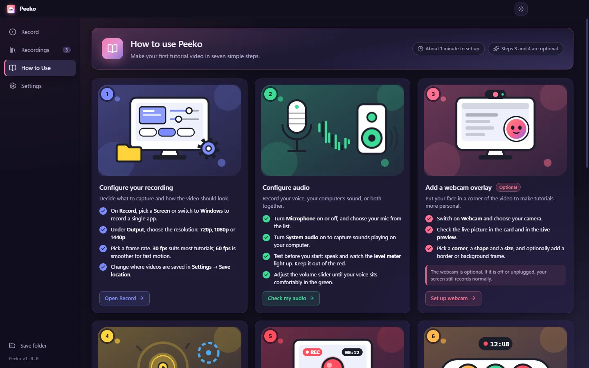
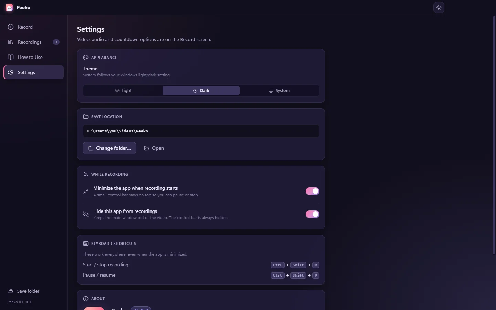

Record anything
A full screen, one monitor, all your monitors at once, or a single app window. Choose 720p, 1080p or 1440p at 24, 30 or 60 fps.
Peeko captures your screen, voice and computer sound in perfect sync, adds your webcam and click highlights, and saves a clean MP4 ready for YouTube, courses and demos.


Built for creators, teachers and trainers who want great-looking recordings without learning a studio app.
A full screen, one monitor, all your monitors at once, or a single app window. Choose 720p, 1080p or 1440p at 24, 30 or 60 fps.
Your microphone, your computer's sound, or both, mixed perfectly with the video. Pick your mic, set the volume and watch a live level meter.
Put your face in any corner: circle, rectangle or rounded, three sizes, with a border and background frame. Burned right into the video.
A colourful ring appears wherever you click, so viewers never lose the cursor. Ripple, pulse or double styles; right clicks show a dashed ring.
Countdown, pause and resume, and hotkeys that work anywhere. A tiny control bar floats on top and never shows up in your video.
Every recording in one place with thumbnails. Preview, rename, delete or open your MP4 in a click, ready to upload anywhere.
Peeko follows your Windows theme, or switch with one click.




Pick a screen or window, check your microphone level, and turn on the webcam or click highlights if you like.
Give your video a name, press Start recording (or Ctrl+Shift+R), and demonstrate.
Stop when you're done. Peeko saves an MP4 (H.264 + AAC) that plays everywhere and uploads anywhere.
| Operating system | Windows 10 (version 2004 or later) or Windows 11, 64-bit |
|---|---|
| Processor | 64-bit dual-core; a graphics chip with H.264 encoding (most from 2015 onwards) makes saving faster |
| Memory | 4 GB RAM (8 GB recommended) |
| Disk space | 500 MB for Peeko, plus your recordings (about 40–65 MB per minute at 1080p) |
| Optional | Any microphone and webcam that Windows recognises |
| Not supported | Windows "N" editions without Microsoft's free Media Feature Pack; Windows on ARM; macOS and Linux |
No subscription. Pay once, record forever.
One-time purchase · personal & commercial use
Prices in USD. Sales tax/VAT is calculated at checkout by Paddle, our merchant of record. See Terms of Sale & Refunds and the licence agreement.
No. Peeko works entirely on your computer. Recordings, settings and thumbnails never leave your PC. See our Privacy Policy.
MP4 with H.264 video and AAC audio, ready for YouTube, Vimeo, social media, course platforms and every video editor.
No watermark, and no time limit. Recordings can be as long as your free disk space allows.
Yes. Choose a full screen, one monitor, all monitors together, or any open app window.
No. Peeko can minimise itself while recording, and its small control bar is always hidden from the recording.
No, both are optional. Peeko records your screen on its own, and can add your mic, computer sound and webcam when you want them.
One licence covers one person on up to 3 PCs they own or use.
Ask for a refund within 30 days of purchase. No questions asked. See Terms of Sale & Refunds.
Not yet. Peeko is made for Windows 10 and 11 (64-bit).
Join creators making clear, professional videos with Peeko. Launch price $19 for a limited time.
Get Peeko